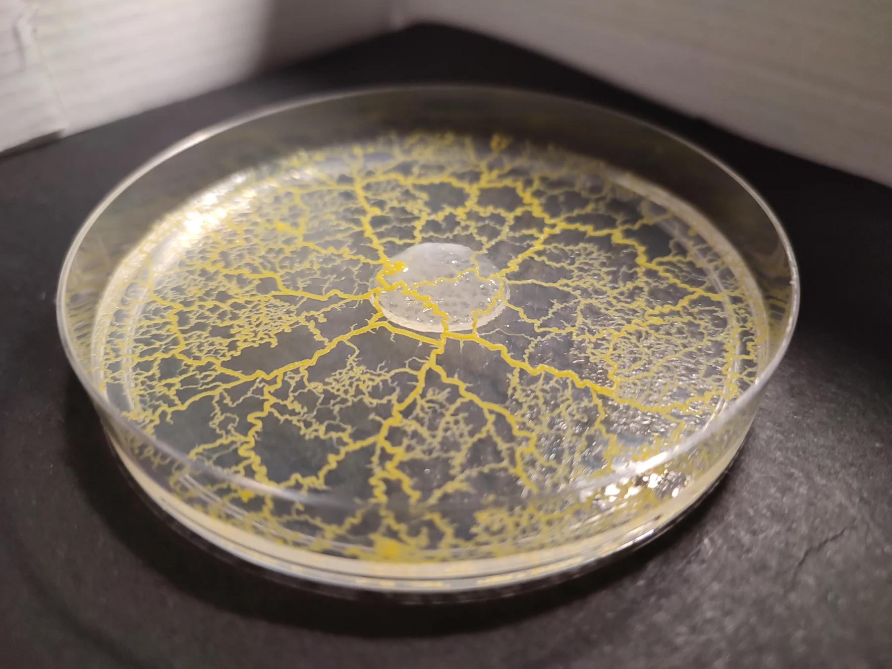

第一次觀察，從四件事開始。Four habits for a first observation.
- 先找環境，不急著找答案。Start with the habitat.
留意潮濕落葉、腐木與樹皮，先拍下整體環境；不任意翻動或帶走材料。Look around damp leaf litter, decaying wood and bark. Photograph the setting without disturbing or collecting it.
- 一張全景，一張近照。Take a wide view and a close-up.
記錄日期、位置、顏色與附著表面；在不接觸生物的前提下，用尺或固定參照物保留大小資訊。Record the date, location, color and surface. Include scale using a ruler or reference without touching the organism.
- 同一位置，隔一段時間再看。Return to the same view.
用固定角度拍攝，對照外形或位置是否改變。觀察不到移動，也是值得保留的紀錄。Use a fixed camera angle and compare shape or position over time. No visible movement is still an observation worth recording.
- 把發現，寫成可以研究的問題。Turn an observation into a question.
例如：「相同時間內，它的邊界移動多少？」描述看見的現象，再提出可能原因。For example: “How far did the edge move over the same interval?” Describe what you saw before proposing a cause.
先留下紀錄，再談解釋。Record first. Interpret second.

© Tim Tim (VD fr) · CC BY-SA 4.0
| 記錄項目Record | 可以怎麼寫What to include |
|---|---|
| 時間與環境Time & setting | 拍攝時間、位置、表面是否潮濕Time, location and whether the surface is damp |
| 外觀與位置Appearance & position | 顏色、分枝、邊界、尺度參照Color, branches, edges and a scale reference |
| 改變與疑問Change & questions | 與上一張的差異；目前還不知道什麼Differences from the previous image; what is still unknown |
若比較兩組培養條件，先只改變一個因素（Variable），保持其他條件一致，並重複觀察。不要用單一次結果，概括所有黏菌。When comparing culture conditions, change one variable at a time, keep the rest consistent, and repeat observations. One result does not describe all slime molds.
閱讀來源Read the source · University of Chicago · Connect with slime mold讀到新名詞，就回來看看。A small bilingual field glossary.
多種生物的通稱，不是單一物種。A common name covering different organisms, not a single species.
變形體型黏菌的多核、連續細胞質階段。The multinucleate, continuous-cytoplasm stage of plasmodial slime molds.
能散布，並在合適條件下萌發的構造。A dispersal structure that can germinate in suitable conditions.
與孢子形成及散布相關的構造。A structure involved in producing and dispersing spores.
細胞內、細胞核之外的物質與構造所在區域。The contents and structures inside a cell, outside the nucleus.
細胞質在管道中反覆改變方向的流動。Cytoplasmic flow that repeatedly reverses direction within tubes.
生物因化學物質分布而產生方向性移動。Directional movement in response to chemical cues.
重複刺激後，反應逐漸降低的一種學習形式。A form of learning in which a response decreases after repeated stimulation.
你可能也想問。Questions worth asking.
黏菌會把我當食物嗎？Will a slime mold eat me?
本站介紹的自由生活黏菌主要取食微生物，不會像電影中的怪物獵食人類。野外不明物仍以觀察為主，不入口、不刻意接觸。The free-living slime molds introduced here mainly feed on microbes, not people. Observe unknown wild material without tasting or deliberately handling it.
看到黃色的一團，就能確認是多頭絨泡黏菌嗎？Is every yellow blob Physarum polycephalum?
不能。顏色只是線索之一，辨識可能還需要子實體形態、顯微構造及專業比對；照片可以先標示「疑似黏菌」。No. Color is only one clue. Identification may require fruiting structures, microscopy and expert comparison. Label an uncertain photo as a suspected slime mold.
牠為什麼看起來不會動？Why does it seem motionless?
移動可能很慢，也可能正處於不同生命階段。固定角度、間隔拍攝，比只看幾秒鐘更容易發現變化。Movement may be slow, or you may be seeing a different life stage. Fixed-view photographs over time reveal more than a few seconds of watching.
可以從哪個主題重新複習？Where should I review?
先從「認識黏菌」分清兩種類型，再用「生命週期」對照照片中的階段，最後閱讀行為與研究。Start with the two lifestyles in “Meet slime molds,” identify life stages, then move on to behavior and research.
留下你的觀察與問題Share an observation or a question
延續原網站的交流入口。這個連結會開啟原站的 Google 表單。Continue the conversation through the original website’s Google Form.